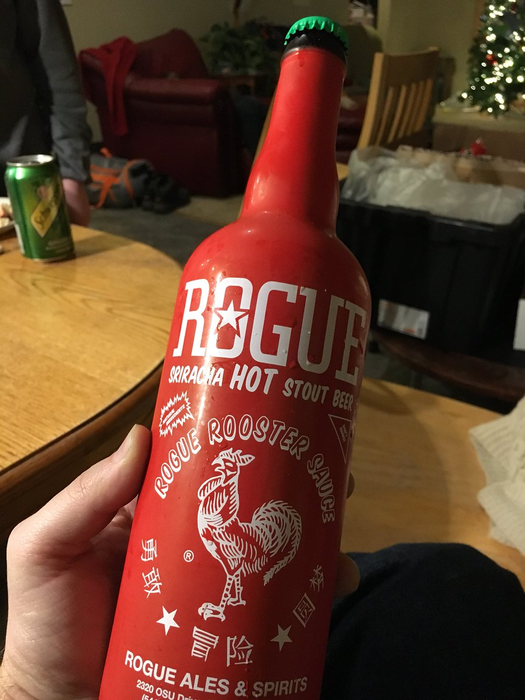

  	<div class="flex-wrap">
      
  	  <article class="tweet  " id="main">
  	    <p class="full_text">
  	      Ringing in 2018 with this... not sure yet whether this is a good idea or not 🌶🍺 <div class="gallery"><ul><li><a href="../../tweets_media/947703963184390144-DSbrtk7UQAEpruj.jpg"></a></li></ul></div>
  	    </p>
  	    <p class="created_at">
  	      12/31/2017, 9:40:06 PM
  	    </p>
  	    <p class="favorite_count">Favs: 1</p>
  	    <p class="retweet_count">Retweets: 0</p>
  	    <a class="permalink" href="../947703963184390144">link</a>
  	  </article>

  	</div>
  </div>
